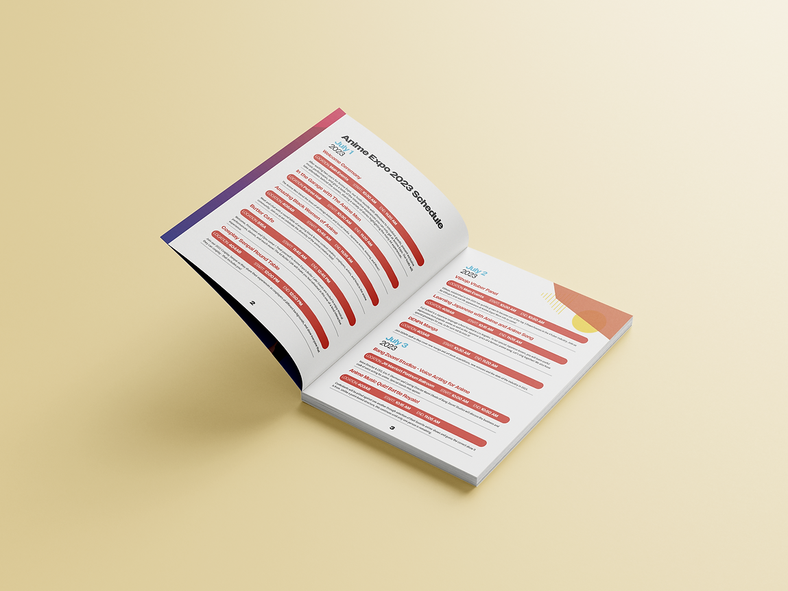
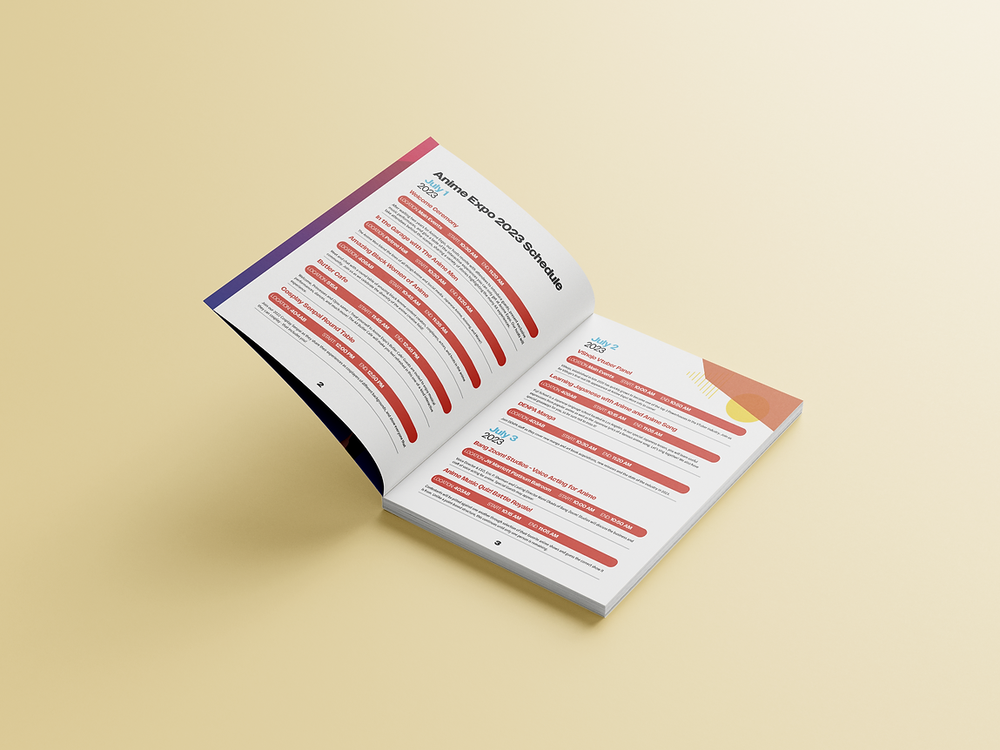

Conference Collateral Materials
Asked to create a collateral for Anime Expo following the theme already placed for the year 2023. This included the program, multiple badges, and a tri-fold display template.
I looked into the themeing of Anime Expo and incorporated a lot of their geometric shapes and colors into my design. I made sure to include their anime girl mascot on the front of the cover, inside, and on the badges. The red and blue gradient is the strongest element in all of the materials.
Design and execution was overall a success, the badges were cohesive yet distinct from each other and there is a clear theme with all the collateral materials.
 
